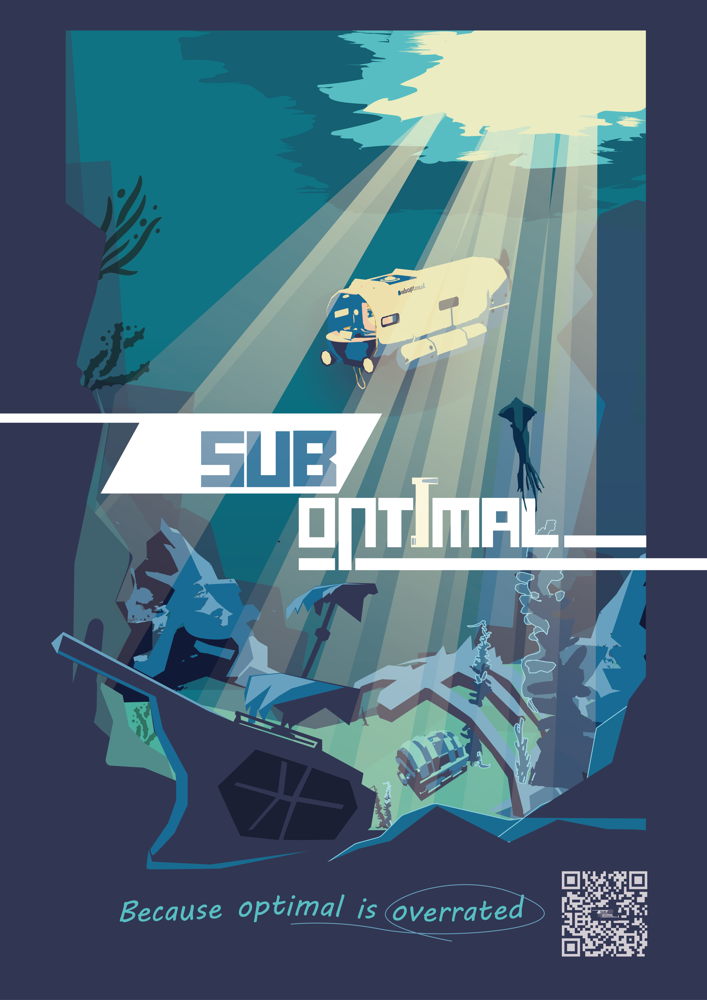

Suboptimal is an online co-op game for up to four players. A crew of hapless sailors pilot a submarine across the ocean floor in search of treasure, managing the vessel from inside and outside while keeping each other alive. It's silly, chaotic, and overall just a good time.
4 Week Group Project
9 Team Members
Powered by Unreal Engine 5
Futuregames, Stockholm
Won the Futuregame Awards Best Multiplayer award!
UI: custom widget components and a Blueprint function library for animations.
Multiplayer Support: fixing replication issues in designer Blueprints and the other programmer's C++ code.
Generalist: duct-taping whatever needed duct-taping in a short, fast project.

My ContributionsFour weeks is short. My approach was pragmatic: quick, functional solutions over elegant ones, and patching holes rather than rebuilding foundations. The core systems had been built by designers before the programmers joined, and they were deeply coupled — refactoring them would have consumed most of my available time. So I worked with what was there.
I created custom widget wrappers for the common UI elements used across the project: a button, progress bar, slider, and dropdown. Wrapping Unreal's built-in slate widgets gave me full control over animations and behaviour while ensuring visual consistency across the game. I also built a Blueprint function library for running widget animations cleanly — handling cases where the same animation is already playing, in either direction, without stuttering or interruption.
A lot of my time went toward moving logic to use Unreal's intended multiplayer patterns. Replacing ad-hoc state changes with OnRepNotify calls removed hard references and cleaned up a surprising amount of tangled code. I used EventDispatchers for similar reasons throughout. I also fixed the shark — it wasn't replicating or animating correctly in multiplayer, which made it considerably less threatening than intended.
I wrote a lightweight save system in C++ using a custom GameUserSettings class, a dedicated subsystem, and the GameInstance — primarily to support the game's settings persistence across sessions.
The first time I sat down for a full playtest, I had a blast. It was silly and goofy in exactly the way we'd hoped. That alone makes it a success.